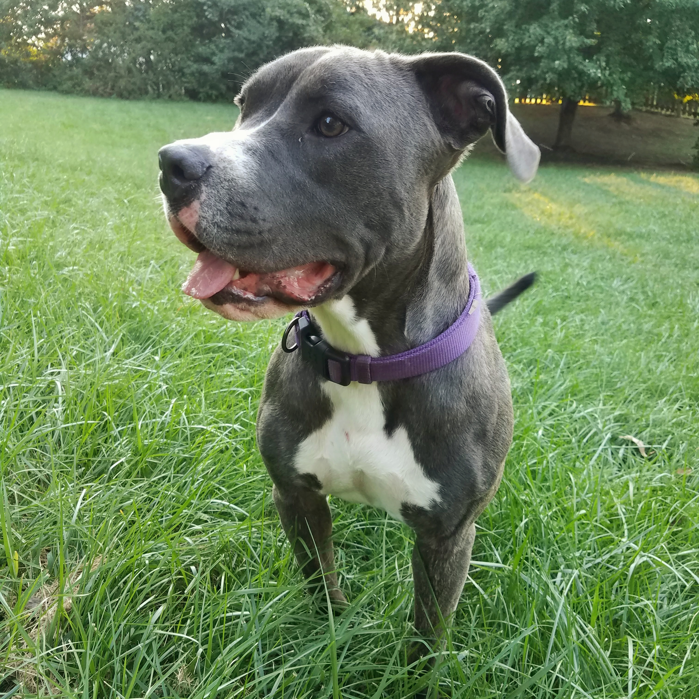

Luna
Luna is a pitbull/bulldog. She was born in April 2017. Luna has maximum energy levels at all times, but is a little bit clumsy. She still runs into walls and jumps under tables. She has no sense of personal space and will follow anyone, anywhere, all day. If you get up, she gets up. If you sit, she sits... on your foot.

She's very active. Cardio is her favorite exercise. There's a hill in the backyard that she runs laps around, keeping us safe from stray bunnies and squirrels.

She's such a curious little thing. She used to visit the neighbor's yard. A lot. How? Well, it took a while to catch her. She stood on some bricks and lept over the top of the fence. Being only 3 years old, she didn't know any better. She also didn't know how to get back without bricks on the other side. So, when she was done exploring, she would wait patiently for someone to come save her. Little did she know, her mom is 5'1" and can barely lean over a fence, must less lift 70 lbs with flailing nails clawing for ground.

Eventually we got her a pretty new necklace that vibrates when she gets too close to the fence.
She broke it.

Luna was the tiniest baby. So small that her dad was able to take her to work. She woud sit in a small box on his desk and everyone would come by to see her. She loved the attention.

She still thinks she's a baby.